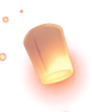
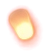
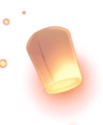
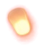

来自drq的回复
周好美，我其实不知道你在想什么； 我很怕这种心被悬在空中的情形，所以我要逃跑一下。 大概……你可以想象，我现在是一只把头埋进沙子里的鸵鸟 （qrz，但屁股还露在外面） 我把手机放在了一个我不太容易拿到的地方。 等我鼓起勇气，再来看你做了什么决定。 但其实我也很想在你回复我后立刻回复你。 所以我做了这个页面，等你编辑完你的长文本后，就可以来看了。 根据你对我的回复，点下去吧—— 但记住哦，只能选一个哦。 （只要点了其中一个，其他两个再点就会跳转到 404） ！要想好再选哦 你选了什么，我不会知道，所以也不用担心我在背后监听你的选择（qrz）。